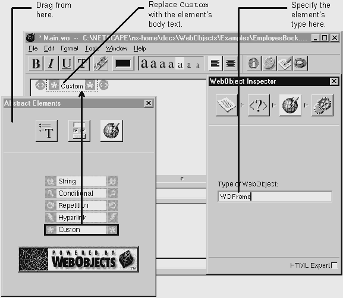

Table of Contents
Table of Contents
 Previous Section
Previous Section
Table of Contents
Previous Section
Place the cursor where you want the element.
Choose the Abstract Elements palette. (Click the palette button to bring up the palette window.)
Drag the item from the palette onto the page.
If necessary, specify the element type in the inspector window. (Click the inspector button to bring up the inspector window.)

Abstract elements are dynamic elements that don't have an HTML counterpart. You can learn more about abstract elements and other dynamic elements in the chapter "How WebObjects Works" of the WebObjects Developer's Guide.
WOConditionals, WOHyperlinks, WORepetitions, and WOStrings don't need any extra setup in the inspector. To create any other type of abstract element, use the custom element and specify the element type in the inspector window. Once you have the element set up, you may want to store it on a custom palette if you are going to use it frequently.
See "Formatting Tips" if you're having trouble editing the page.
 Next Section
Next Section